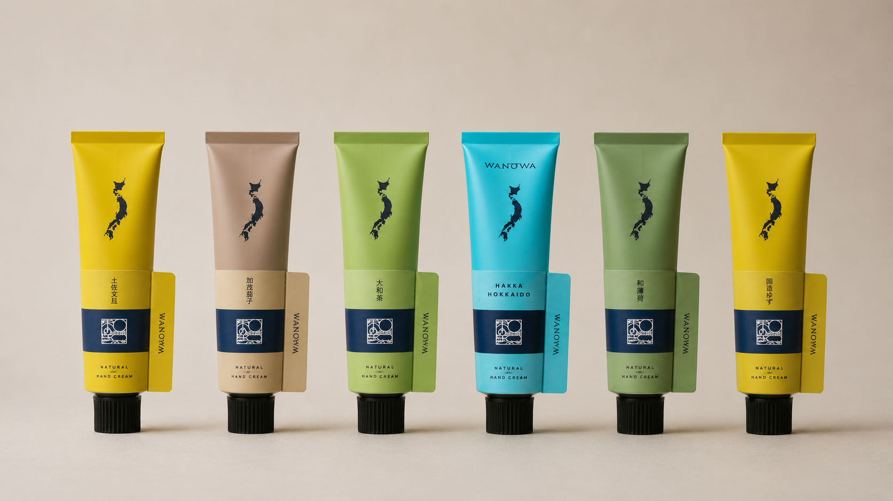
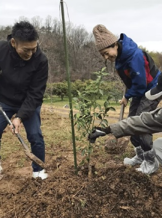

6つの産地の香り
それぞれの土地・作り手・季節が、一本のハンドクリームに宿っています

日本の産地の香り × 植樹活動
WANOWAが使う素材は、産地と作り手が見えるものを選んでいる。石川、岐阜、京都、高知、北海道、奈良。6つの産地から届く香りが、一本のハンドクリームになる。そしてその売上の一部が、植樹活動へとつながっていく。
あなたがWANOWAを手に取るとき、その選択はどこかの山の、一本の木につながっている。

それぞれの土地・作り手・季節が、一本のハンドクリームに宿っています